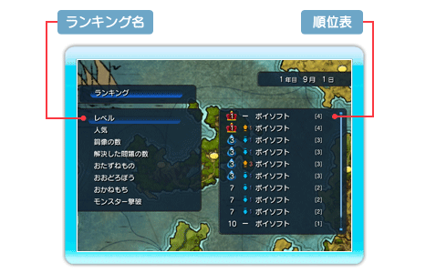

27 |
勇者ランキング画面 |
 |
「ランキング」コマンドを選択すると、シミュレーションを行っている世界での勇者のランキングを確認する事ができます。 ランキングを選択して、Aボタンを押すと順位表から勇者のステータスを確認する事ができます。＋ボタン、－ボタンでウインドウを切り替えて、ステータス、スキル、所持品、覚えている魔法を確認できます。 ■勇者ランキング画面

ランキングには、以下のようなものがあります。 ◆レベル 勇者のレベルです。 ◆人気 世界中の人から見た、勇者の人気です。 良い事をすると人気がアップします。 ◆銅像の数 街の人が作ってくれた、勇者の銅像の数です。 ◆解決した問題の数 自然災害によるエリアの問題を解決したり、復活した魔物や破壊神を倒すとカウントされます。 ◆おたずねもの 泥棒をしたのがバレた、他の勇者を倒したなどの、ワルモノ勇者としての度合いです。 ◆おおどろぼう お城や民家に泥棒に入った回数です。 ◆おかねもち 勇者の所持金です。 ◆モンスター撃破 勇者が倒したモンスターの数です。
| |
 |
 |